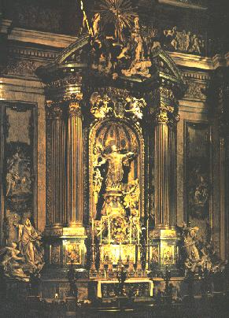
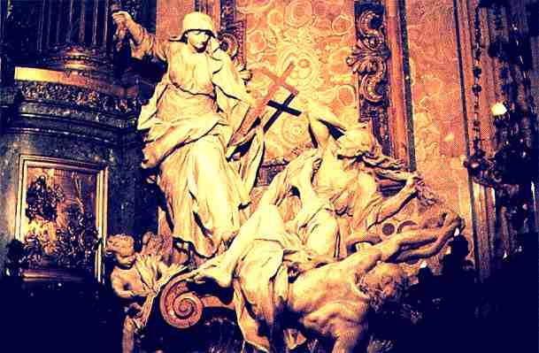
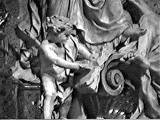

|
 |
In the left transept of the Chiesa del Gesu, the Jesuit Church of Rome, built during the Catholic Counterreformation of the 16th century, there is a sculpture group I wish to draw your attention to. It is titled "Religion Flagellates Heresy" by Pierre Le Gros, and is located at the altar built over the tomb (pictured at left) of Ignatius Loyola, the founder of the Jesuits. The statuary in question is to the lower right of the altar, and is a little difficult to see in this picture, but it does show the overall altar. It depicts a woman (Mary?) scourging two of the Protestant reformers, Martin Luther and John Huss. |
|
 |
In this close up you can see that in her right hand the woman has a lightning bolt, about to be cast at the two heretics, and in her left a cross, which the outcasts are recoiling from in apparent horror. |
Here is a link to another, and even better photo of this sculpture group -
 Casting out the heretics.
Casting out the heretics.
At the base of the altar, we see an angel tearing pages out of a book.
What book is it? A little history first.
|  |
John Huss was a student of John Wycliff, who translated the Bible into English in 1382. Wycliff advocated the right of the common man to read the Bible in his own language. Both Wycliff and Huss believed scripture to supersede the dogmas and ordinances of the church and both declared the Papacy to be the AntiChrist foretold in scripture. John Huss was burned alive* at the stake in 1415 for his "heresy" and rebellion against Catholic authority. |
| From
the video "Israel of the Alps" Copyright © 1993 LLT Productions - Used by Permission |